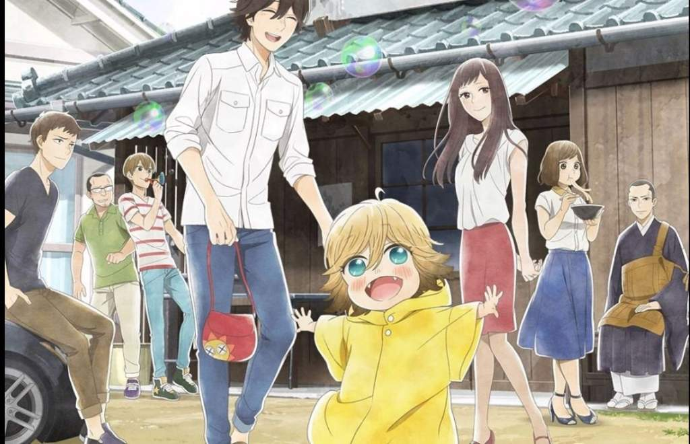

Udon no Kuni no Kiniro Kemari Opening – S.O.S. by WEAVER

Namida ni shining sun egao ni shadow
hontō no kokoro wa No one knows
shakai no meiro de kimi wa mayotte
dare ni mo ie nai No one helps
boku mo onaji namida o motte
sugoshi ta hibi ga atte
kanashimi ni ubaware ta kimi no
ashita no iro o kae tai
kotoba ni kakusare ta S . O . S .
nanihitotsu mō minogashi taku nai
I'll never never never never let you go !
te o hikou koko kara issho ni arukidaseru
fuan ni holding hope yūki ni back off
itsu demo kokoro wa No one sees
shakai no rule ni ie nai honshin
mawari ni awase te fake your smile
kokyū o shite kakushi ta kanjō no tsubomi wa ima mo
kasuka demo tashika ni kimi no
hontō no kimochi o shimesu
shigusa ni kakusare ta S . O . S .
sugata o kae te mo miotosa nai
I'll never never never never let you go !
fumidaso u koko kara issho ni arukidaseru
heiki na kao 'daijōbu sa' tte sakasama demo tsutawaru yo
heiki na kao 'daijōbu sa' tte kokoro wa mada naiteru yo
heiki na kao 'daijōbu sa' tte hontō no kimochi mitsuke te miseru yo
kotoba ni kakusare ta S . O . S .
nanihitotsu mō minogashi taku nai
I'll never never never never let you go !
sono me ni hisomu kage o terashi te
chikara ni nari tai yo S . O . S .
mamori tai te o gyutto nigirishime
I'll never never never never let you go !
bokura wa itsu demo soba ni irareru kara